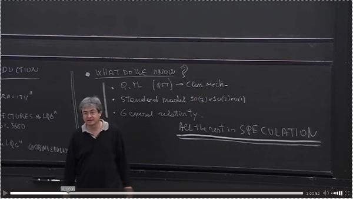
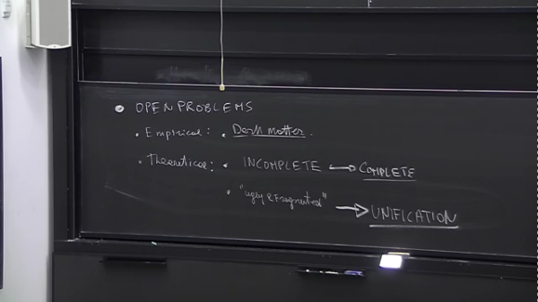

|  | Maven project-info (temp) What's RPF and how I got here Why from an IT perspective |
This page recaps very shortly the status quo of contemporary
physics, by commenting this recap video
lecture, by Carlo Rovelli, which provides a high level view of
what happened.
For a detailed view, I'd recommend the
Theoretical
Minimum by Leonard Susskind.
That's the first part of the recap, starting at 5:30: the aim of such
"incontrovertible" summary is to provide some arguments for LQG,
showing the need (@6:00) for trying to quantize space, sort of final
attempt, having run out of options.
Of course the recap is not
about all Physics, but about the "what do we know about Nature at the
elementary levels of Physics" (@6:20).
As shown in the page about cosmic gold mine news, our "current knowledge" is split into two main theories:
That's our "proven" knowledge (@9:10), "those are the only things we know about the world", while "all the rest is speculation" (@9:30). Please notice "all the rest" means string theory, supersymmetry, etc, including loop quantum gravity itself: that's it (see intro snapshot: @12:00).
Of course, all the above works fine within its domains, but those domains are "uglyly split" (no common ground) and "don't cover it all", meaning that Nature has more to show, than what's in those domains.
Indeed, "we are not happy with the picture there" (@12:15) because "there are open problems" (up to @16:35).
...
This (@16:35-@) is an example of why an IT perspective could bring value to the discussion: this section's title should remind IT people about the so-called POJOs.

Indeed, it's not just science history that went through the rediscovery of classical Greek philosophy, even IT history got to a point where the "good plain old java object" were "a better way to restart from".
TODOs: